Redes convolucionales
Segmentación
De la foto a una etiqueta por píxel
¿Qué es segmentar?
¿Qué hay, dónde y qué es cada píxel?
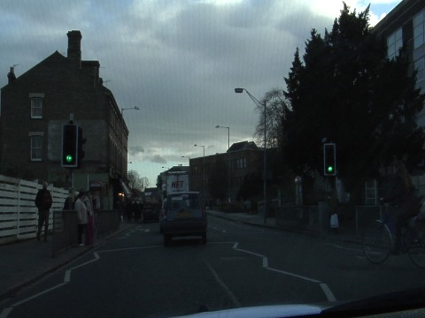
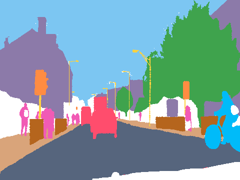
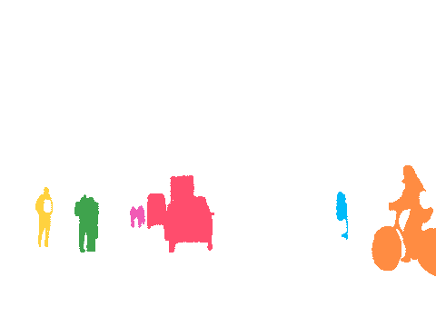
- Clasificación¿Qué hay?1 vector de clases
- Detección¿Dónde, más o menos?N cajas
- Segmentación semántica¿Qué es cada píxel?360 × 480 etiquetas
- Segmentación de instancias¿Qué objeto es cada píxel?una máscara por objeto
Antes de la U-Net
Solo reducir vs. reducir y ampliar
Ronneberger, Fischer y Brox, 2015
La arquitectura U-Net
Encoder (bajada): comprime · Decoder (subida): reconstruye · Skips (punteadas): copian el detalle
Lo que hay que saber
Paso 1 de 16 · encoder
La imagen
3 matrices de números, una por color.
192 × 256 × 3
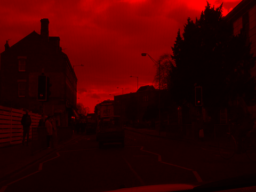
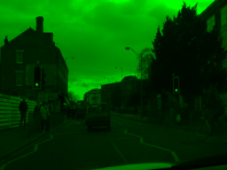
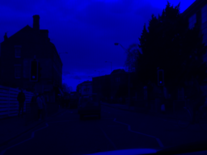
de cerca: 5 × 5 píxeles, sus 3 números
Paso 2 de 16 · encoder
Un filtro: la ventanita
La ventana recorre la foto: en cada lugar multiplica, suma y escribe un número.
3 × 3 × 3 = 27 pesos
la foto
el mapa que sale
un paso, con los números reales
×Paso 3 de 16 · encoder
16 ventanitas → 16 mapas
16 filtros distintos, cada uno con su mapa. El 16 = canales.
192 × 256 × 16
los 16 filtros aprendidos
sus 16 mapas
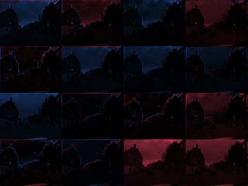
Paso 4 de 16 · encoder
BatchNorm + ReLU
Los negativos se vuelven 0.
0% en 0
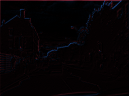
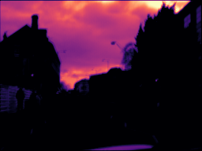
Paso 5 de 16 · encoder
La segunda convolución
Cada filtro ve los 16 mapas.
3 × 3 × 16 = 144 pesos
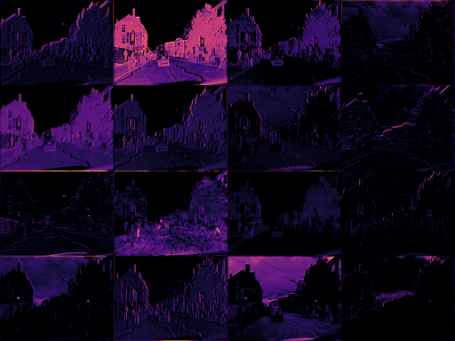
Paso 6 de 16 · encoder
Max pooling 2 × 2
A cada uno de los 16 mapas: de cada 2 × 2, el máximo.
192 × 256 → 96 × 128
sin pesos
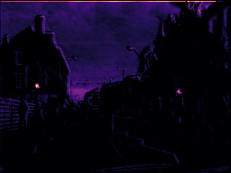
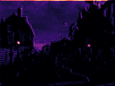
zoom: 8 × 8 → 4 × 4
Paso 7 de 16 · encoder
Bajar 4 veces
Tamaño ÷ 2, filtros × 2.
Paso 8 de 16 · el fondo de la U
El cuello de botella
Sabe qué hay, no dónde.
12 × 16 × 256
4 de sus 256 mapas

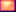
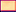
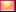
Paso 9 de 16 · decoder
Convolución transpuesta
Cada valor → un cuadro de 2 × 2.
12 × 16 → 24 × 32
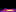
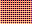
Paso 10 de 16 · decoder
Concatenar: la skip
Pegar la copia del encoder.
128 + 128 = 256
sin pesos
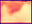
Paso 11 de 16 · decoder
Convoluciones del decoder
Mezclar qué + dónde.
256 → 128 canales
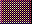
Paso 12 de 16 · decoder
Subir hasta 192 × 256
Repetir hasta el tamaño original.
192 × 256 × 16
Paso 13 de 16 · salida
Convolución 1 × 1
En cada píxel: 16 → 11 puntajes.
192 × 256 × 11
Paso 14 de 16 · salida
Softmax por píxel
Puntajes → probabilidades.
Paso 15 de 16 · salida
La clase más probable
Gana la más probable.
argmax
sin pesos
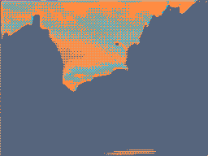
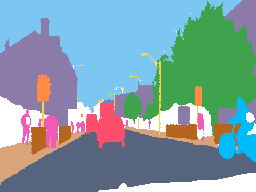
Paso 16 de 16 · resumen
¿Qué se entrena y qué no?
Se entrena
No se entrena
Lo elegimos nosotros
- 3 × 3tamaño del filtro
- 16 → 256filtros por nivel
- 4niveles de la U
- 192 × 256tamaño de entrada
- Adam · 0.001optimizador y tasa de aprendizaje
- 40épocas
CamVid · 367 fotos de entrenamiento
Así aprende a ver
Sin skips
U-Net
Real
233 fotos de prueba que nunca vio
¿Qué tan bien segmenta?
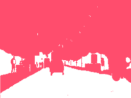
Rojo = píxel equivocado. Los errores viven en los bordes y en lo delgado.
Lo raro y delgado es lo difícil: postes, señales, peatones, ciclistas.
Parientes de la U-Net
Otras arquitecturas
Paso a paso
- Una CNN de clasificación (VGG) sin capas densas.
- Conv 1 × 1: puntajes por clase a 1/32 del tamaño.
- Agranda × 2 y suma los puntajes de pool4; otra vez con pool3.
- Agranda × 8 hasta el tamaño original.
Diferencia con U-Net
Las skips suman puntajes en vez de concatenar mapas, y casi no hay decoder: el último salto es × 8. Bordes más gruesos.
Paso a paso
- Encoder VGG: conv + pool, y guarda dónde estaba cada máximo.
- Decoder simétrico: unpooling pone cada valor en la posición guardada.
- Convoluciones rellenan los huecos.
- Softmax por píxel.
Diferencia con U-Net
No copia mapas completos: solo copia las posiciones (índices). Usa mucha menos memoria, pero recupera menos detalle. Nuestra red “sin skips” es como SegNet sin índices.
Paso a paso
- Encoder (ResNet o Xception) que solo reduce a 1/16.
- ASPP: 4 convoluciones dilatadas en paralelo (rates 1, 6, 12, 18) + promedio global.
- Se concatenan y una conv 1 × 1 las combina.
- Decoder corto: × 4, pega rasgos de 1/4, conv 3 × 3, × 4.
Diferencia con U-Net
Ve más contexto sin reducir la imagen, gracias a la convolución dilatada. Su decoder es más simple: un solo skip.
Paso a paso
- Backbone (ResNet + FPN) extrae mapas a varias escalas.
- RPN propone cajas donde puede haber objetos.
- RoIAlign recorta cada caja a 14 × 14.
- Tres cabezas: clase, caja ajustada y una mini FCN que da la máscara 28 × 28 de ese objeto.
Diferencia con U-Net
Segmenta instancias: primero detecta cada objeto y luego segmenta dentro de su caja. Dos autos = dos máscaras.
Paso a paso
- Un encoder grande (ViT) procesa la imagen una sola vez.
- El usuario da una pista: un punto, una caja o texto.
- Un decoder ligero (transformer) cruza la pista con la imagen.
- Devuelve 3 máscaras posibles con su calificación.
Diferencia con U-Net
No tiene clases fijas: segmenta lo que señales. Entrenado con 1,100 millones de máscaras (SA-1B), funciona sin reentrenar.
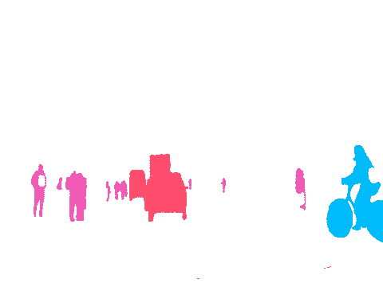
| U-Net | FCN | SegNet | DeepLab v3+ | Mask R-CNN | SAM | |
|---|---|---|---|---|---|---|
| Tipo | semántica | semántica | semántica | semántica | instancias | lo que se señale |
| Cómo agranda | conv transpuesta | × 2, × 2, × 8 | unpooling con índices | bilineal × 4, × 4 | por caja (28 × 28) | decoder transformer |
| Qué copia del encoder | mapas completos | puntajes (suma) | posiciones del máximo | un mapa de 1/4 | mapas FPN | embedding de la imagen |
| Idea clave | skips por nivel | quitar las densas | poca memoria | conv dilatada + ASPP | detectar y luego segmentar | pistas, sin clases |
| Bueno para | pocos datos, imágenes médicas | la idea base | dispositivos chicos | escenas grandes | contar objetos | etiquetar rápido |
¿Preguntas?
github.com/Mmateo101/Segmentation_presentation